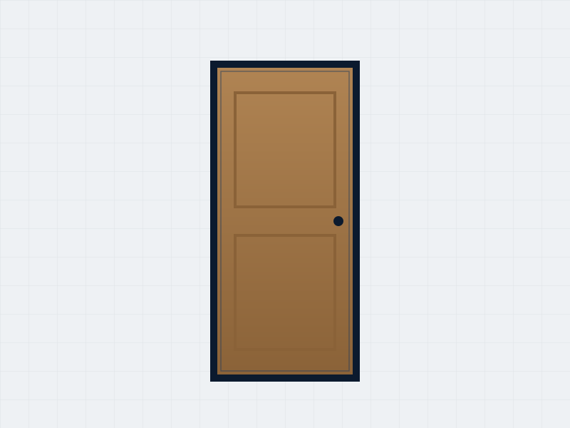
Puertas de interior
MDF enchapado en cedro o pino, lisas o molduradas, con buño y foliadas.
Catálogo
Tocá cada categoría para ver los tipos y opciones. Trabajamos con varias fábricas, así que si no ves algo puntual, consultanos igual: seguramente lo conseguimos.

MDF enchapado en cedro o pino, lisas o molduradas, con buño y foliadas.
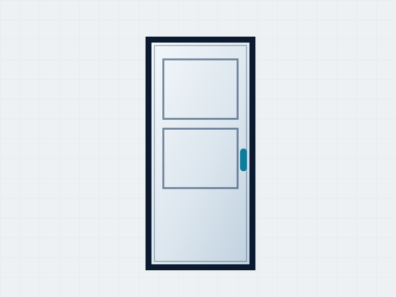
Chapa inyectada en líneas simples o de seguridad, con pintura final o foliadas símil madera.
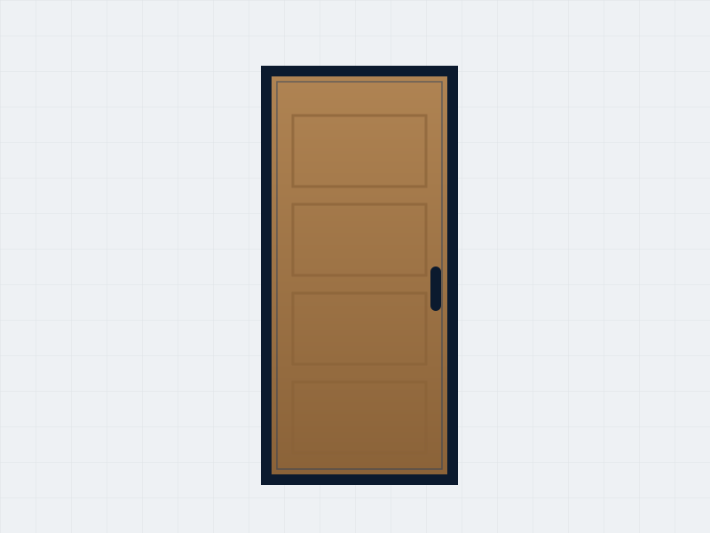
Cedro macizo, de abrir o pivotantes, para entradas de mayor jerarquía.
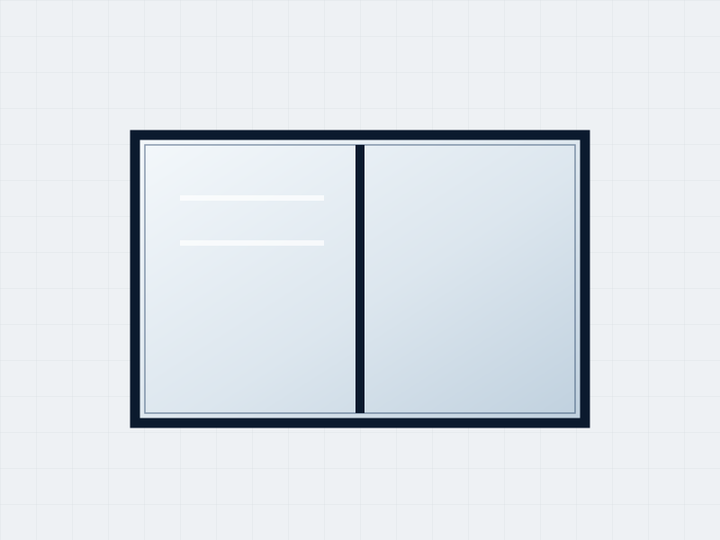
Sistemas corredizos, de abrir, paño fijo, proyectantes y banderolas, en varios colores.
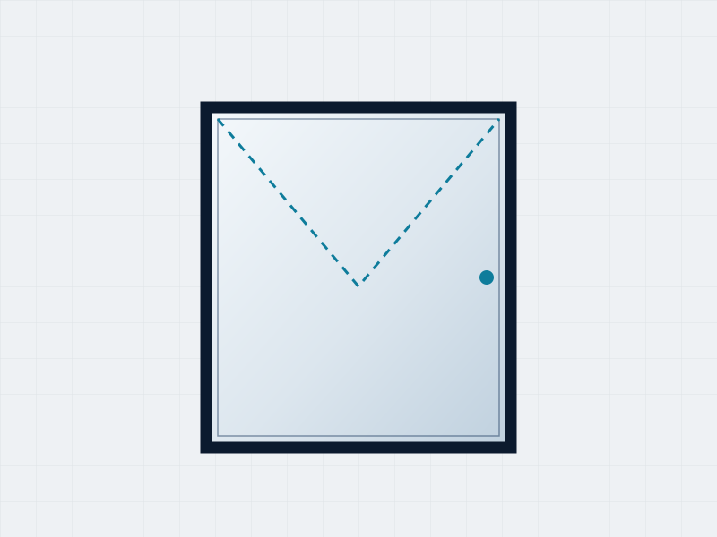
Sistemas oscilobatientes y corredizos, con excelente aislación térmica y acústica.
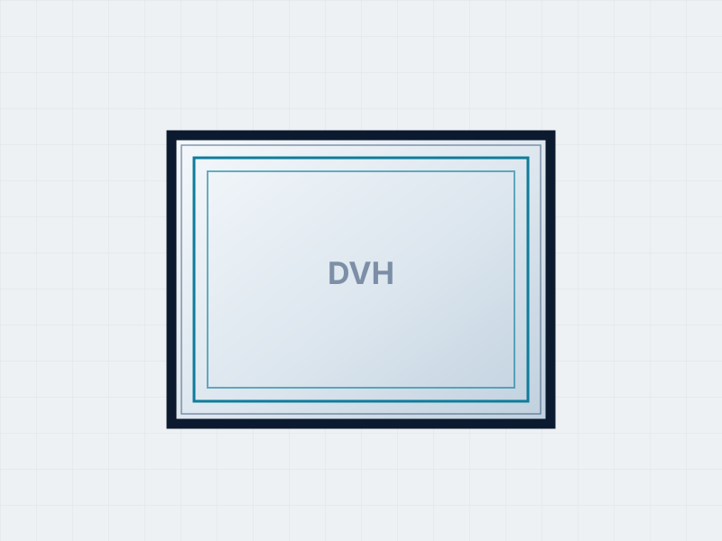
Vidrio simple, laminado de seguridad, DVH (doble vidrio hermético) y vidrios fantasía.
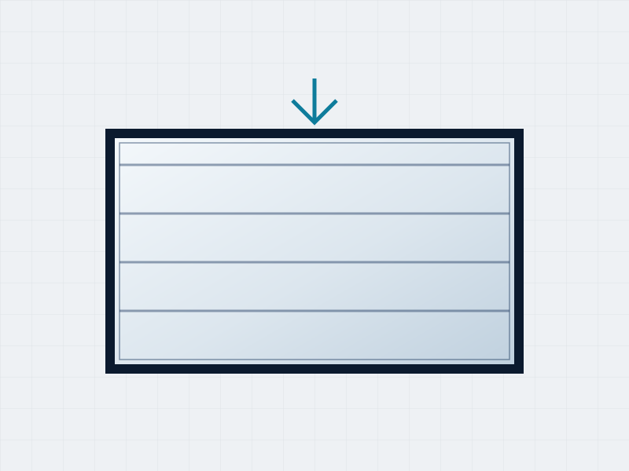
Con motorización, control remoto y freno de seguridad ante corte de luz.
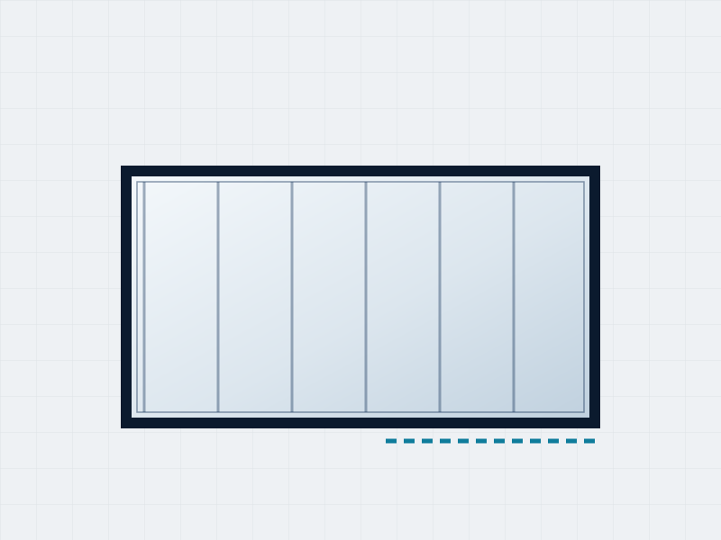
Chapa inyectada en líneas simples o de seguridad, con pintura final o foliadas símil madera.
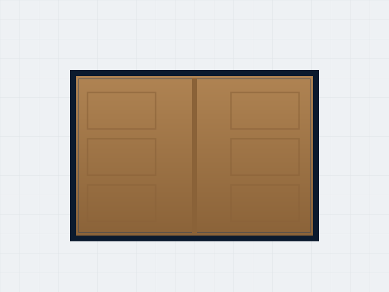
Madera maciza de cedro, de abrir o pivotantes, para cocheras y accesos.
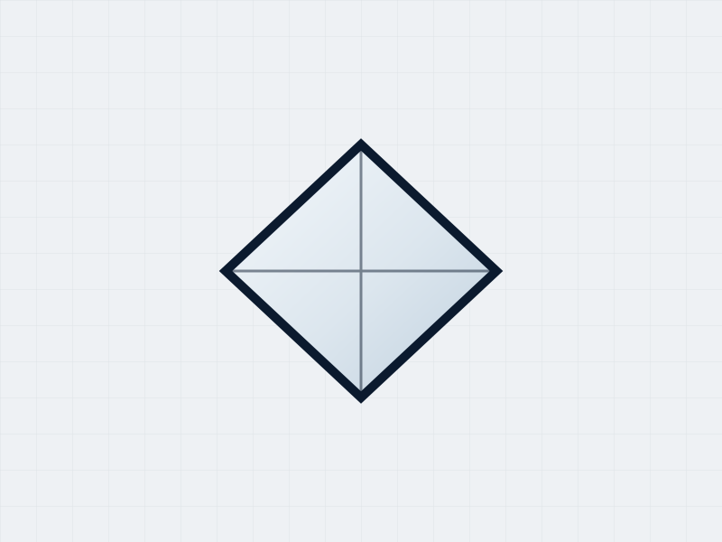
Para dar luz natural a ambientes internos, baños y pasillos.
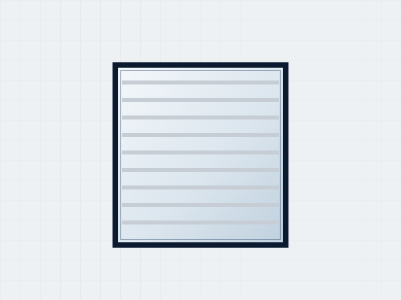
Cortinas de enrollar en PVC o aluminio, en colores interior y exterior.
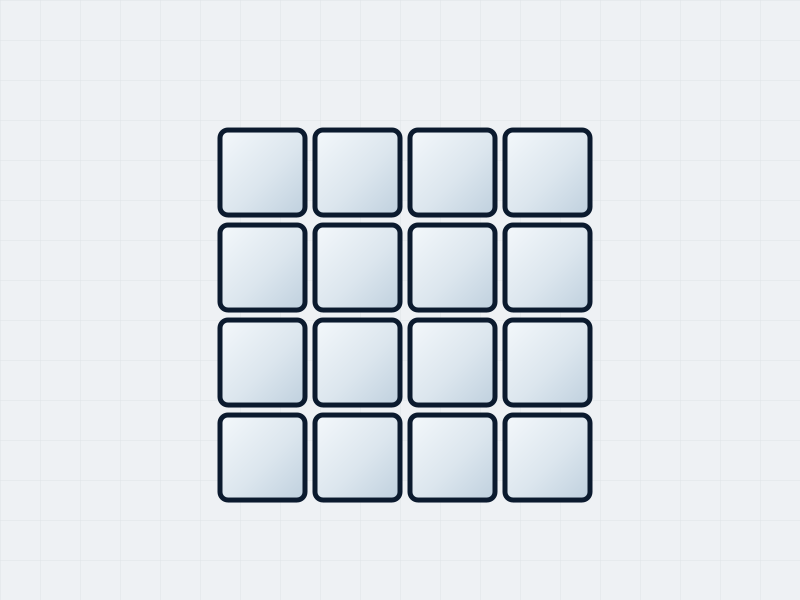
Simples o con diseño, para paredes y tabiques que dejan pasar la luz.
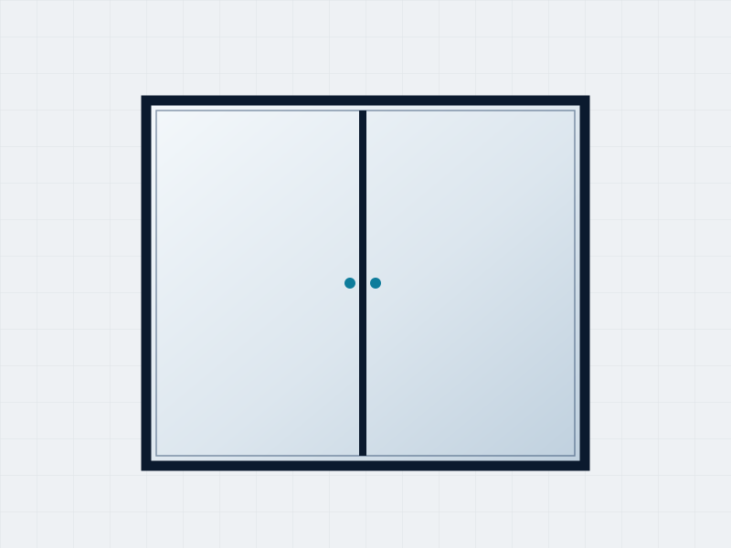
Frentes a medida con hojas corredizas para vestidores y dormitorios.
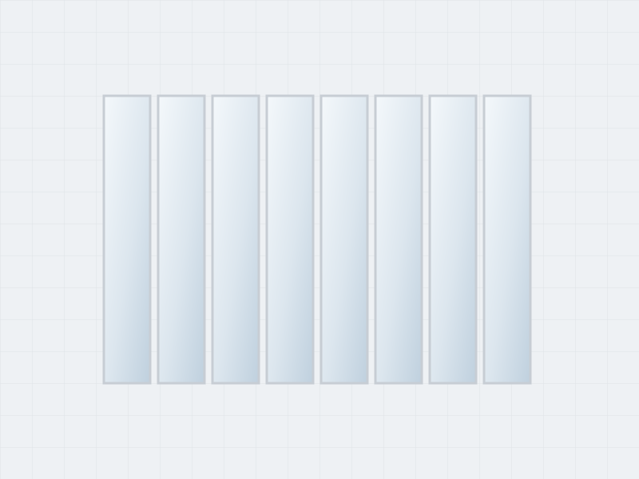
Revestimientos de pared y cielorrasos de PVC, prácticos y fáciles de mantener.
¿Por qué no publicamos precios? Porque cada abertura se pide a fábrica según la medida exacta del vano, el material, el vidrio y los herrajes que elijas. Pasanos las medidas y te devolvemos la cotización sin cargo.